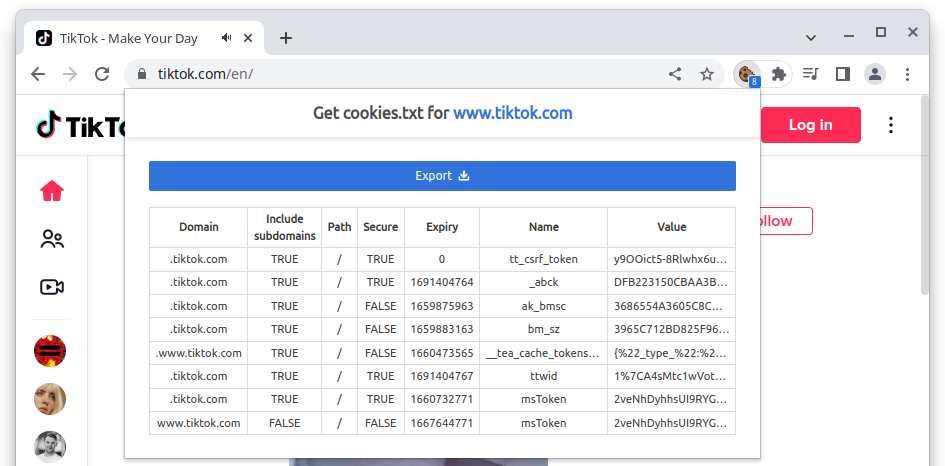

The unofficial or hidden API is essentially what the TikTok website
uses to display you content. Originally based on a translation of Deen Freelon’s
Pyktok Python module, traktok contains
functions to simulate a browser accessing some of these API endpoints.
How these endpoints work was discovered through reverse engineering and
TikTok might change how these endpoints operate at any moment. As of
writing this (2025-11-18), there are functions that can:
- search videos using a search term
- get video details and the video files from a given video URL
- get user videos
- get user info
- get who follows a user
- get who a user is following
To use these functions, you have to log into <tiktok.com> first
and then give R the cookies the browser uses to identify
itself.
Authentication
The easiest way to get the cookies needed for authentication is to export the necessary cookies from your browser using a browser extension (after logging in at TikTok.com at least once). I can recommend “Get cookies.txt” for Chromium based browsers or “cookies.txt” for Firefox (note that almost all browsers used today are based on one of these).

Save the cookies.txt file, which will look something like this:
# Netscape HTTP Cookie File
# https://curl.haxx.se/rfc/cookie_spec.html
# This is a generated file! Do not edit.
.tiktok.com TRUE / TRUE 1728810805 cookie-consent {%22ga%22:true%2C%22af%...
.tiktok.com TRUE / TRUE 1700471788 passport_csrf_token e07d3487c11ce5258a3...
.tiktok.com TRUE / FALSE 1700471788 passport_csrf_token_default e07d3487c11...
#HttpOnly_.tiktok.com TRUE / TRUE 1700493610 multi_sids 71573310862246389...
#HttpOnly_.tiktok.com TRUE / TRUE 1700493610 cmpl_token AgQQAPORF-RO0rNtH...
...It does not matter if you download all cookies or just the
ones specific to TikTok, as we use the
cookiemonster package to deal with that. To read the
cookies into a specific encrypted file, simply use:
cookiemonster::add_cookies("tiktok.com_cookies.txt")And that’s it! traktok will access these cookies
whenever necessary. To check if authentication was successful, you can
use:
auth_check()
#> ✔ Research API authenticated
#> ✔ Hidden API authenticatedUsage
Search videos
To search for videos, you can use either tt_search or
tt_search_hidden, which do the same, as long as you do not
have a token for the Research API. The function opens a browser in the
background (or you can see what is happening with
headless = TRUE) and scrolls down. Below, we let it scroll
for up to one minute and solve captchas if they appear:
rstats_df <- tt_search_hidden("#rstats", solve_captchas = TRUE, scroll = "1m")
rstats_df
#> # A tibble: 111 × 25
#> video_id video_url video_timestamp video_length video_title
#> <chr> <chr> <dttm> <int> <chr>
#> 1 72522261… https://… 2023-07-05 07:01:45 36 "Wow!!! TH…
#> 2 72478540… https://… 2023-06-23 12:15:59 5 "#CapCut #…
#> 3 73029706… https://… 2023-11-19 00:56:09 163 "What is c…
#> 4 71670108… https://… 2022-11-17 15:42:56 58 "Here’s an…
#> 5 75284293… https://… 2025-07-18 14:43:31 27 "How to Co…
#> 6 71710339… https://… 2022-11-28 11:54:12 8 "please do…
#> 7 75631651… https://… 2025-10-20 05:05:18 36 "Quick R Q…
#> 8 72933174… https://… 2023-10-24 00:36:48 9 "#CapCut #…
#> 9 73024703… https://… 2023-11-17 16:34:44 31 "Did you k…
#> 10 68446099… https://… 2020-07-01 20:22:14 27 "Things in…
#> # ℹ 101 more rows
#> # ℹ 20 more variables: video_locationcreated <chr>,
#> # video_diggcount <int>, video_sharecount <int>,
#> # video_commentcount <int>, video_playcount <int>,
#> # author_id <chr>, author_secuid <chr>, author_username <chr>,
#> # author_nickname <chr>, author_bio <chr>, download_url <chr>,
#> # html_status <int>, music <list>, challenges <list>, …This already gives you pretty much all information you could want about the videos that were found.
Get metadata and download videos
If you already have URLs, you can obtain some more information,
including the video files, using tt_videos:
rstats_df2 <- tt_videos(rstats_df$video_url[1:2], save_video = TRUE)
rstats_df2
#> # A tibble: 2 × 26
#> video_id video_url video_timestamp video_length video_title
#> <chr> <chr> <dttm> <int> <chr>
#> 1 725222615… https://… 2023-07-05 07:01:45 36 "Wow!!! TH…
#> 2 724785406… https://… 2023-06-23 12:15:59 5 "#CapCut #…
#> # ℹ 21 more variables: video_locationcreated <chr>,
#> # video_diggcount <int>, video_sharecount <int>,
#> # video_commentcount <int>, video_playcount <int>,
#> # author_id <chr>, author_secuid <chr>, author_username <chr>,
#> # author_nickname <chr>, author_bio <chr>, download_url <chr>,
#> # html_status <int>, music <list>, challenges <list>,
#> # is_secret <lgl>, is_for_friend <lgl>, is_slides <lgl>, …Per default, the function waits between one and ten seconds (chosen
at random) between making two calls, to not make it too obvious that
data is scraped from TikTok. You can speed up the process (at your own
risk), by changing the sleep_pool argument, which controls
the minimum and maximum number of seconds to wait:
rstats_df3 <- tt_videos(
rstats_df$video_url[3:4],
save_video = TRUE,
sleep_pool = 0.1
)
rstats_df3
#> # A tibble: 2 × 26
#> video_id video_url video_timestamp video_length video_title
#> <chr> <chr> <dttm> <int> <chr>
#> 1 730297066… https://… 2023-11-19 00:56:09 163 "What is c…
#> 2 716701086… https://… 2022-11-17 15:42:56 58 "Here’s an…
#> # ℹ 21 more variables: video_locationcreated <chr>,
#> # video_diggcount <int>, video_sharecount <int>,
#> # video_commentcount <int>, video_playcount <int>,
#> # author_id <chr>, author_secuid <chr>, author_username <chr>,
#> # author_nickname <chr>, author_bio <chr>, download_url <chr>,
#> # html_status <int>, music <list>, challenges <list>,
#> # is_secret <lgl>, is_for_friend <lgl>, is_slides <lgl>, …When you are scraping a lot of URLs, the function might fail eventually, due to a poor connection or because TikTok is blocking your requests. It therefore usually makes sense to save your progress in a cache directory:
rstats_df3 <- tt_videos(rstats_df$video_url[5:6], cache_dir = "rstats")
list.files("rstats")
#> [1] "7171033929175026949.json" "7528429314807696673.json"Note that the video files are downloaded into the dir
directory (your working directory by default), independently from your
cache directory.
If there are information that you feel are missing from the
data.frame tt_videos returns, you can look at
the raw, unparsed json data using:
rstats_list1 <- tt_request_hidden(rstats_df$video_url[1]) |>
jsonlite::fromJSON()Parsing the result into a list using fromJSON, results
in a rather complex nested list. You can look through this and see for
yourself if the data you are interested in is there
Get followers and who a user is following
To get followers and who a user is following, we need to first look
up their SecID, which is a special ID for users. We can do so using the
tt_user_info_hidden function:
user_info <- tt_user_info_hidden("tiktok")
user_info$secUid
#> [1] "MS4wLjABAAAAv7iSuuXDJGDvJkmH_vz1qkDZYo1apxgzaxdBSeIuPiM"Once you have the secUid you can look up a maximum of
5,000 followers per account:
tt_get_follower_hidden(secuid = "MS4wLjABAAAAwiH32UMb5RenqEN7duyfLIeGQgSIx9WtgtOILt55q6ueUXgz4gHqZC5HFx4nabPi",
verbose = FALSE)
#>
#> # A tibble: 1,116 × 27
#> avatarLarger avatarMedium avatarThumb commentSetting
#> <chr> <chr> <chr> <int>
#> 1 https://p16-sign-sg.tik… https://p16… https://p1… 0
#> 2 https://p16-sign-va.tik… https://p16… https://p1… 0
#> 3 https://p16-sign-va.tik… https://p16… https://p1… 0
#> 4 https://p16-sign-va.tik… https://p16… https://p1… 0
#> 5 https://p16-sign-va.tik… https://p16… https://p1… 0
#> 6 https://p16-sign-va.tik… https://p16… https://p1… 0
#> 7 https://p16-sign-va.tik… https://p16… https://p1… 0
#> 8 https://p16-sign-va.tik… https://p16… https://p1… 0
#> 9 https://p16-sign-va.tik… https://p16… https://p1… 0
#> 10 https://p16-sign-va.tik… https://p16… https://p1… 0
#> # ℹ 1,106 more rows
#> # ℹ 23 more variables: downloadSetting <int>, duetSetting <int>,
#> # ftc <lgl>, id <chr>, isADVirtual <lgl>, nickname <chr>,
#> # openFavorite <lgl>, privateAccount <lgl>, relation <int>,
#> # secUid <chr>, secret <lgl>, signature <chr>,
#> # stitchSetting <int>, ttSeller <lgl>, uniqueId <chr>,
#> # verified <lgl>, diggCount <int>, followerCount <int>, …Likewise, you can also check who this account follows:
tt_get_following_hidden(
secuid = "MS4wLjABAAAAwiH32UMb5RenqEN7duyfLIeGQgSIx9WtgtOILt55q6ueUXgz4gHqZC5HFx4nabPi",
verbose = FALSE
)
#>
#> # A tibble: 489 × 28
#> avatarLarger avatarMedium avatarThumb commentSetting
#> <chr> <chr> <chr> <int>
#> 1 https://p16-sign-va.tik… https://p16… https://p1… 0
#> 2 https://p16-sign-va.tik… https://p16… https://p1… 0
#> 3 https://p16-sign-va.tik… https://p16… https://p1… 0
#> 4 https://p16-sign-va.tik… https://p16… https://p1… 0
#> 5 https://p16-sign-va.tik… https://p16… https://p1… 0
#> 6 https://p16-sign-va.tik… https://p16… https://p1… 0
#> 7 https://p16-sign-va.tik… https://p16… https://p1… 0
#> 8 https://p16-sign-va.tik… https://p16… https://p1… 0
#> 9 https://p16-sign-va.tik… https://p16… https://p1… 0
#> 10 https://p16-sign-va.tik… https://p16… https://p1… 0
#> # ℹ 479 more rows
#> # ℹ 24 more variables: downloadSetting <int>, duetSetting <int>,
#> # ftc <lgl>, id <chr>, isADVirtual <lgl>, nickname <chr>,
#> # openFavorite <lgl>, privateAccount <lgl>, relation <int>,
#> # secUid <chr>, secret <lgl>, signature <chr>,
#> # stitchSetting <int>, ttSeller <lgl>, uniqueId <chr>,
#> # verified <lgl>, diggCount <int>, followerCount <int>, …